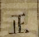

热门问题热门问题热门问题热门问题热门问题热门问题热门问题热门问题热门问题热门问题热门问题热门问题热门问题热门问题热门问题热门问题热门问题热门问题

Mary McCormick
Lv1
修改
2018-06-05
热门问题热门问题热门问题热门问题热门问题热门问题热门问题热门问题热门问题热门问题热门问题热门问题热门问题热门问题热门问题热门问题热门问题热门问题
写下你的问题
提交答案
取消
暂时还没有人回答，开始写第一个回答
Mary McCormick
Lv1
356
这里是回复So strongly and metaphysically did I conceive of my situation then, that while earnestly watching his motions, I seemed distinctly to perceive that my own individuality was now merged in a joint stock company of two; that my free will had received a mortal wound; and that another's mistake or misfortune might plunge innocent me into unmerited disaster and death. Therefore, I saw that here was a sort of interregnum in Providence; for its even-handed equity never could have so gross an injustice. And yet still further pondering—while I jerked him now and then from between the whale and ship, which would threaten to jam him—still further pondering
这里是回复So strongly and metaphysically did I conceive of my situation then, that while earnestly watching his motions, I seemed distinctly to perceive that my own individuality was now merged in a joint stock company of two; that my free will had received a mortal wound; and that another's mistake or misfortune might plunge innocent me into unmerited disaster and death. Therefore, I saw that here was a sort of interregnum in Providence; for its even-handed equity never could have so gross an injustice. And yet still further pondering—while I jerked him now and then from between the whale and ship, which would threaten to jam him—still further pondering
这里是回复So strongly and metaphysically did I conceive of my situation then, that while earnestly watching his motions, I seemed distinctly to perceive that my own individuality was now merged in a joint stock company of two; that my free will had received a mortal wound; and that another's mistake or misfortune might plunge innocent me into unmerited disaster and death. Therefore, I saw that here was a sort of interregnum in Providence; for its even-handed equity never could have so gross an injustice. And yet still further pondering—while I jerked him now and then from between the whale and ship, which would threaten to jam him—still further pondering
这里是回复So strongly and metaphysically did I conceive of my situation then, that while earnestly watching his motions, I seemed distinctly to perceive that my own individuality was now merged in a joint stock company of two; that my free will had received a mortal wound; and that another's mistake or misfortune might plunge innocent me into unmerited disaster and death. Therefore, I saw that here was a sort of interregnum in Providence; for its even-handed equity never could have so gross an injustice. And yet still further pondering—while I jerked him now and then from between the whale and ship, which would threaten to jam him—still further pondering
收藏
125分享
修改
发布于2018-06-05 12:30